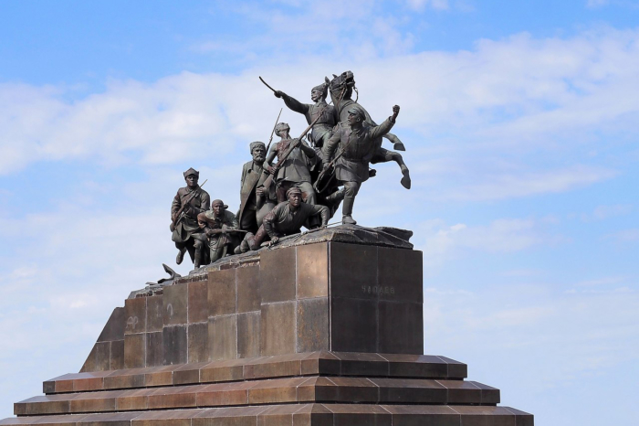
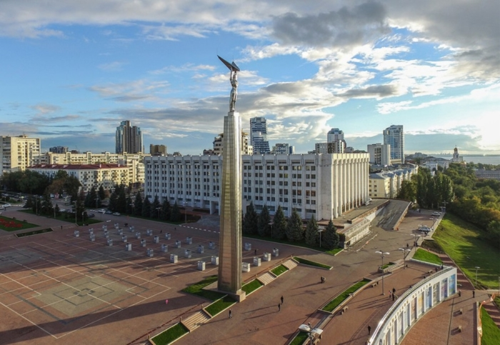
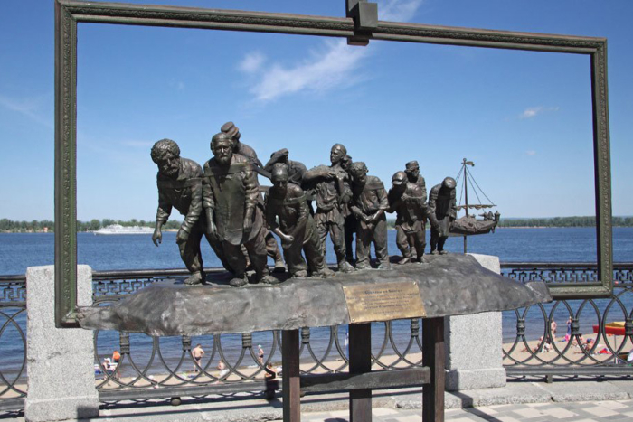

Памятник В. И. Чапаеву
Монумент установлен на площади им. В. И. Чапаева в 1932 году. Авторами композиции являются – архитектор Иосиф Лангбард и скульптор Матвей Манизер. Это была первая конная многопрофильная скульптура в русском искусстве, а также одна из самых масштабных в стране. Образы для композиции брались с реальных бойцов Красной армии. Для создания образа Василия Чапаева, скульптору позировал его сын – Александр Васильевич.
Монумент Славы
Это один из символов Самары. Композиция находится на площади Славы. Открытие состоялось 5 ноября 1971 года. Авторы: П. И. Бондаренко, О. С. Кирюхин, А. Б. Самсонов. Монумент был создан в память об огромном вкладе, в победу Советского народа над фашизмом, всех рабочих, трудившихся на авиационных заводах города. Композиция представляет собой 40-метровый постамент, на котором находится фигура рабочего высотой 13 метров
"Бурлаки на Волге"
Открытие этой композиции в Самаре состоялось 11 сентября 2014 года, в рамках празднования дня города, а также 170-й годовщины со дня рождения знаменитого художника И. Е. Репина. Она находится на городской набережной, в районе Ленинградского спуска, рядом с фонтаном «Парус». Памятник выполнен из бронзы и представляет собой рамку, стилизованную под мольберт, на которой бурлаки тянут баркас. Автор – художник Николай Куклев.
